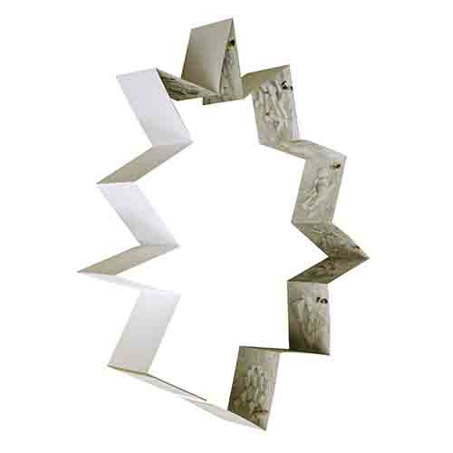

Alicja Wisniowska, Sophomore GD Studio (Spring 2018), project: “Calendars: astronomical, astrological, regimented, impossible, snooze ’em!”, Boston University SVA

Alicja Wisniowska, Sophomore GD Studio (Spring 2018), project: “Calendars: (...)”, Boston University SVA
Alicja Wisniowska, Sophomore GD Studio (Spring 2018), project: “Calendars: (...)”, Boston University SVA
Alicja Wisniowska, Sophomore GD Studio (Spring 2018), project: “Calendars: (...)”, Boston University SVA

Nina Miller, Sophomore GD Studio (Spring 2018), project: “Calendars: (...)”, Boston University SVA
Olivia Williams, Sophomore GD Studio (Spring 2018), project: “Calendars: (...)”, Boston University SVA

Carlyn Soares, Sophomore GD Studio (Spring 2018), project: “Calendars: (...)”, Boston University SVA
Valentina Wicki, Sophomore GD Studio (Spring 2018), project: “Calendars: (...)”, Boston University SVA
Eric Markus, Sophomore GD Studio (Spring 2018), project: “Calendars: (...)”, Boston University SVA
Jiang Xue, Junior Year, book of found images (Fall 2014), Hunan University
Jin Dongdong, Junior Year, book of found images (Fall 2014), Hunan University



Nina Miller, Sophomore GD Studio (Spring 2018), project: “Calendars: astronomical, astrological, regimented, impossible, snooze ’em!”, Boston University SVA

Kabita Das, Sophomore GD Studio (Spring 2018), project: “Calendars: ...”, Boston University SVA
Nina Miller, Sophomore GD Studio (Spring 2018), project: “Calendars: ...”, Boston University SVA
Maureen Burns, Sophomore GD Studio (Spring 2018), project: “Calendars: ...”, Boston University SVA

Gabriela Tirado, Sophomore GD Studio (Spring 2018), project: “Calendars: ...”, Boston University SVA
Gabriela Tirado, Sophomore GD Studio (Spring 2018), project: “Calendars: ...”, Boston University SVA
Nina Miller, Sophomore GD Studio (Spring 2018), project: “Calendars: ...”, Boston University SVA
Charlotte Kershaw, Sophomore GD Studio (Spring 2018), project: “Calendars: ...”, Boston University SVA
Olivia Williams, Sophomore GD Studio (Spring 2018), project: “Calendars: ...”, Boston University SVA
Ciaran Brandin, Sophomore GD Studio (Spring 2018), project: “Calendars: ...”, Boston University SVA
Nina Miller, Sophomore GD Studio (Spring 2018), project: “Calendars: ...”, Boston University SVA
Andrew Kim, Sophomore GD Studio (Spring 2018), project: “Calendars: ...”, Boston University SVA
Charlotte kershaw, Sophomore GD Studio (Spring 2018), project: “Calendars: ...”, Boston University SVA
Olivia Williams, Sophomore GD Studio (Spring 2018), project: “Calendars: ...”, Boston University SVA

Olivia Williams, Sophomore GD Studio (Spring 2018), project: “Calendars: ...”, Boston University SVA
Carlyn Soares, Sophomore GD Studio (Spring 2018), project: “Calendars: ...”, Boston University SVA

Yu Wan Shi in Changsha (Hunan Province): facing the previous building of the School of Design of Hunan University on South Lushan Road


Yi Huan, Zhang Jingya and Yao Yamin, installation for the workshop: “An Iron Rod as a Souvenir” (Spring 2013), conducted with Li Weiyi in Hunan University

Gabby DiPietro “9 Happenings in 4 Parts”, Junior Type IV / book design and production (Spring 2018), Boston University SVA